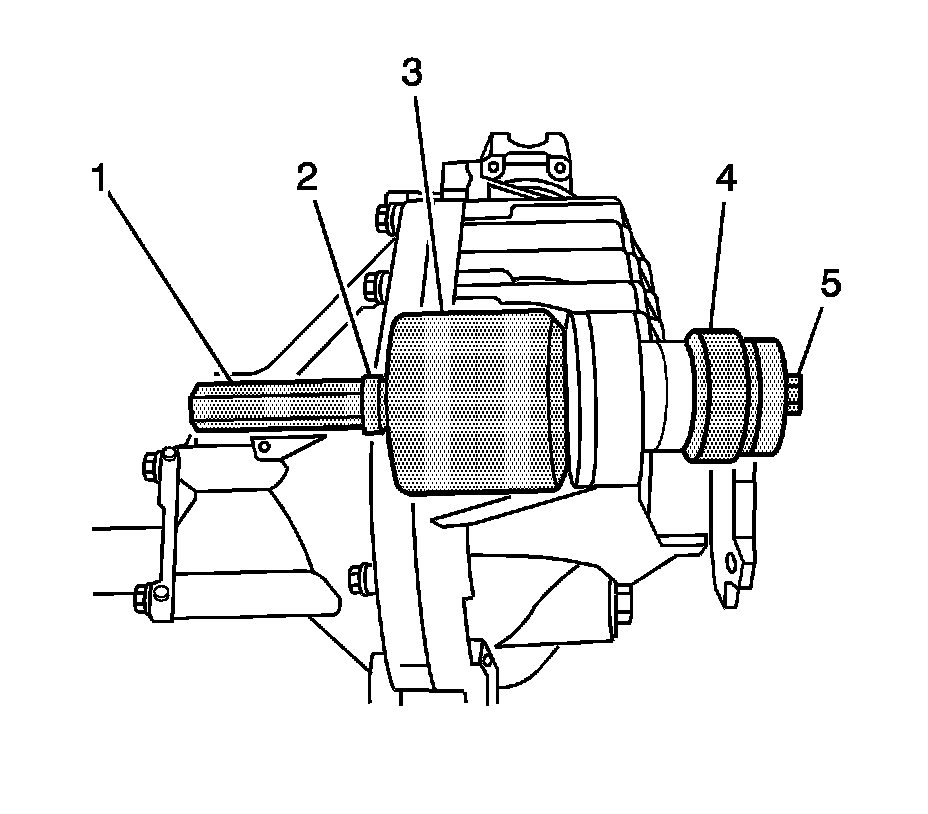

Differential Carrier Assembly Bushing Replacement
Differential Carrier Assembly Bushing Replacement
Tools Required
^ J 33791 Carrier Bushing Remover/Installer
^ J 36616 Axle Mount Bushing Remover/Installer
Removal Procedure
1. Remove the differential carrier assembly.

2. Remove the upper differential carrier assembly bushing by performing the following steps:
1. Install the J 36616-2 (1), the J 33791-1 (2), the thrust bearing (3), the J 21474-18 (4), and the forcing screw as shown.
2. Remove the upper differential carrier assembly bushing by holding the forcing screw and slowly tightening the J 21474-18.
3. Remove the lower differential carrier assembly bushing by performing the following steps:
1. Install the J 21474-18 (1), the thrust bearing (2), the J 33791-1 (3), the J 36616-2 (4), and the forcing screw as shown.
2. Remove the lower differential carrier assembly bushing by holding the forcing screw and slowly tightening the J 21474-18.
Installation Procedure
1. Install the lower differential carrier assembly bushing by performing the following steps:
1. Install the J 21474-18 (1), the thrust bearing (2), the J 36616-2 (3), the J 36616-1 (4), and the forcing screw (5) as shown.
2. While holding the forcing screw, slowly tighten the J 21474-18 until the bushing has stopped against the step on the bushing and is centered within the differential carrier assembly bushing bore.

2. Install the upper differential carrier assembly bushing by performing the following steps:
1. Install the J 21474-18 (1), the thrust bearing (2), the J 36616-2 (3), the J 36616-1 (4), and the forcing screw (5) as shown.
2. While holding the forcing screw, slowly tighten the J 21474-18 until the bushing has stopped against the step on the bushing and is centered within the differential carrier assembly bushing bore.
3. Install the differential carrier assembly.